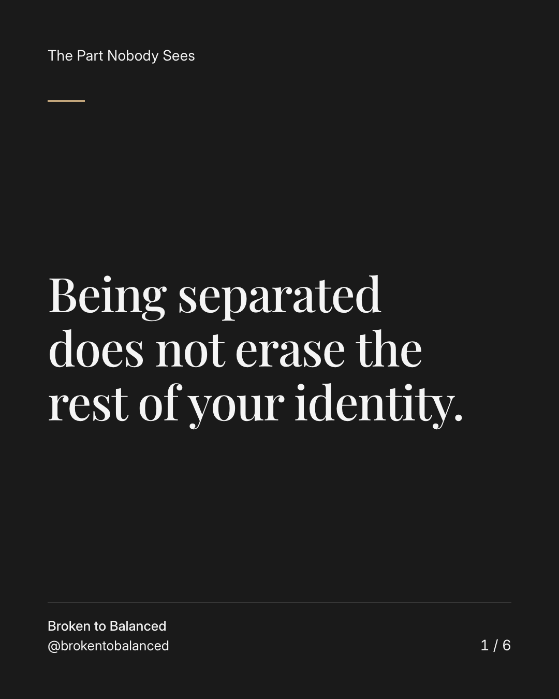
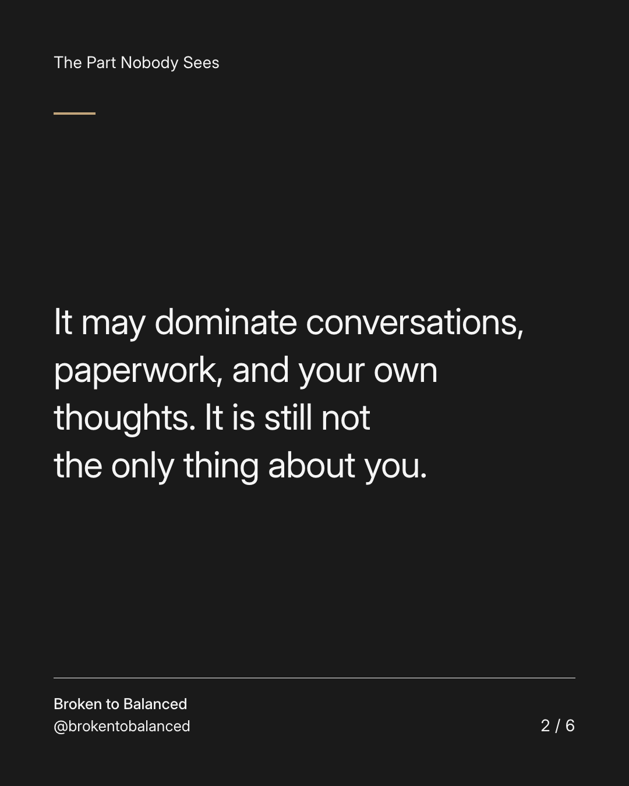
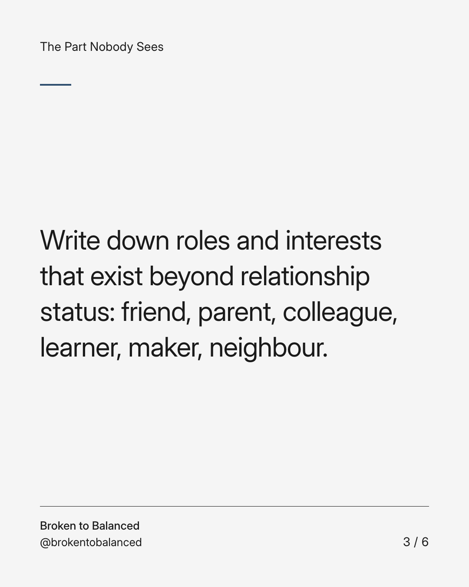
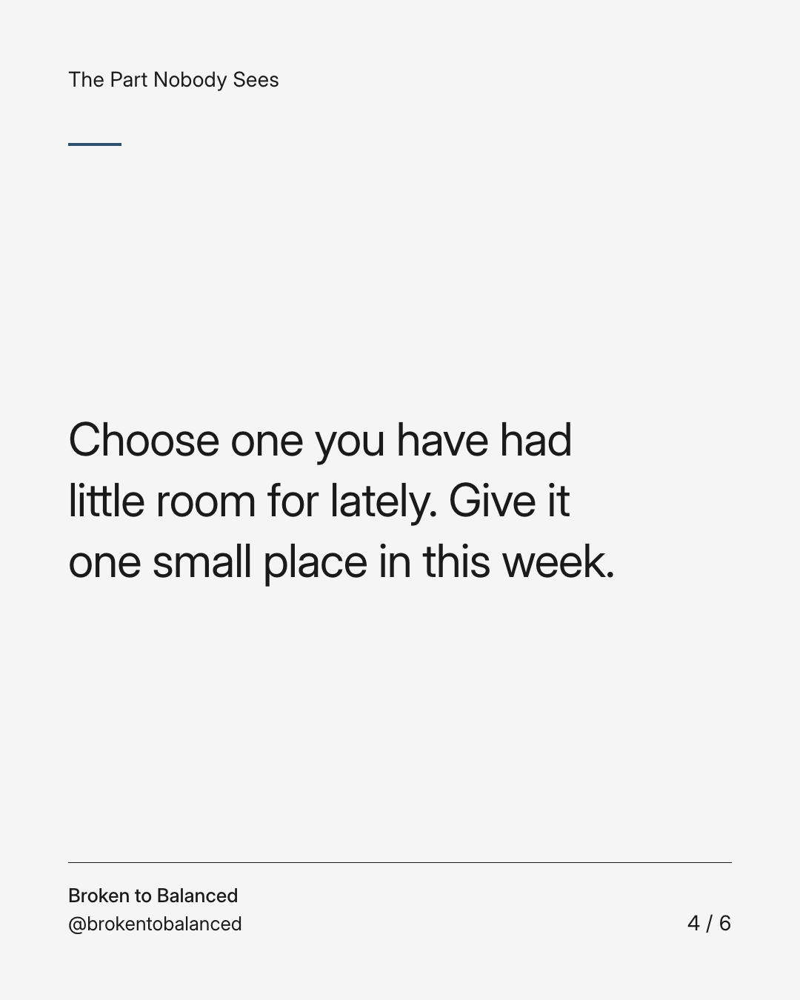
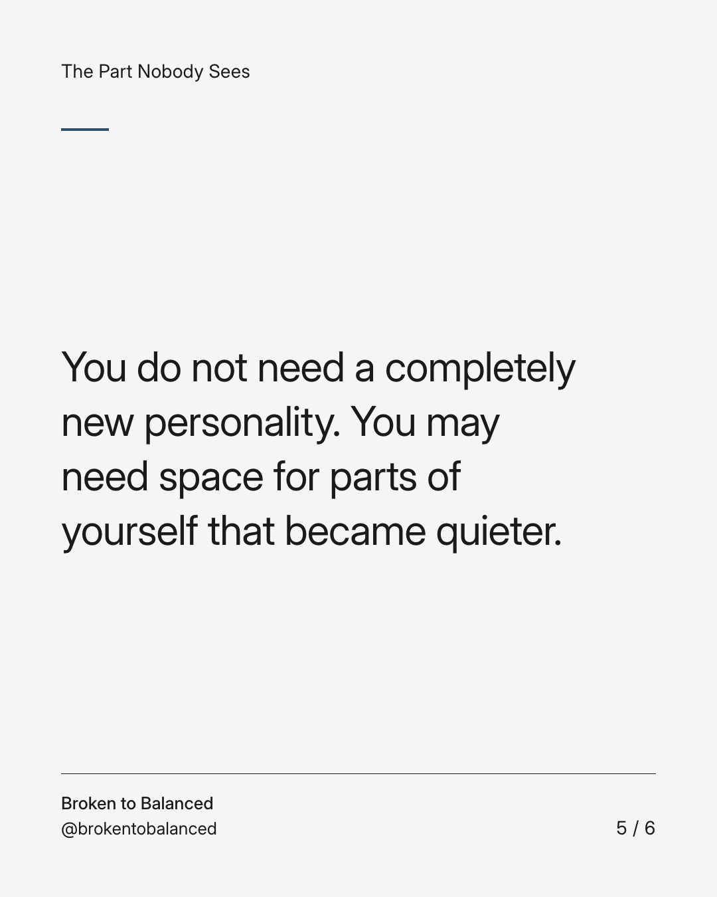
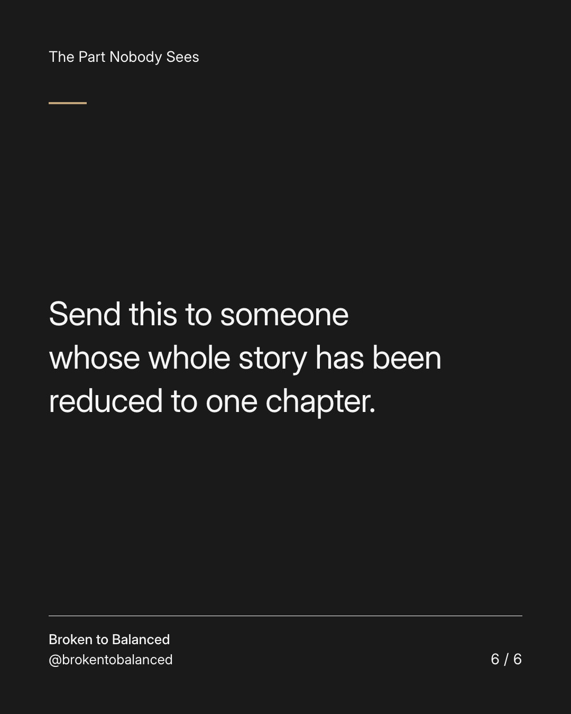

Exact text and accessibility text
Being separated does not erase the rest of your identity.
Slide 1 of 6. Being separated does not erase the rest of your identity.


Exact text and accessibility text
It may dominate conversations, paperwork, and your own thoughts. It is still not the only thing about you.
Slide 2 of 6. It may dominate conversations, paperwork, and your own thoughts. It is still not the only thing about you.


Exact text and accessibility text
Write down roles and interests that exist beyond relationship status: friend, parent, colleague, learner, maker, neighbour.
Slide 3 of 6. Write down roles and interests that exist beyond relationship status: friend, parent, colleague, learner, maker, neighbour.


Exact text and accessibility text
Choose one you have had little room for lately. Give it one small place in this week.
Slide 4 of 6. Choose one you have had little room for lately. Give it one small place in this week.


Exact text and accessibility text
You do not need a completely new personality. You may need space for parts of yourself that became quieter.
Slide 5 of 6. You do not need a completely new personality. You may need space for parts of yourself that became quieter.


Exact text and accessibility text
Send this to someone whose whole story has been reduced to one chapter.
Slide 6 of 6. Send this to someone whose whole story has been reduced to one chapter.
Exact caption
Plain-text fallback: select and copy the caption.